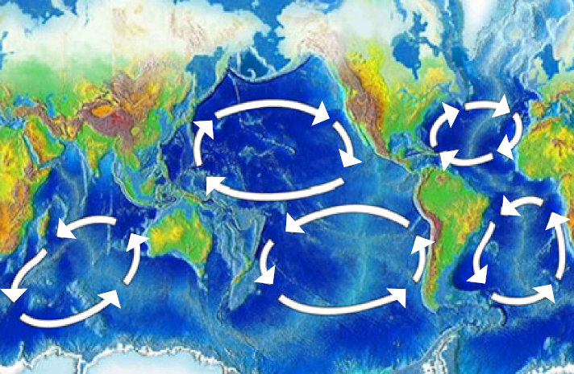

Plastic waste has reached all the world's oceans. However, it has been found that plastic debris concentrates in the oceanic gyres where it forms extensive garbage patches. Of those, the North Pacific garbage patch is the biggest, with an estimated area of 1.6 million square kilometers. Plastic accumulating in these patches photodegrades into smaller and smaller particles and releases toxic and endocrine chemicals such as bisphenol A (BPA).
Plastic pollution harms an estimated 100,000 sea turtles and marine mammals
Summary
The Ocean Cleanup is a nonprofit engineering environmental organization based in the Netherlands, founded in 2013 by Boyan Slat, a Dutch-born inventor-entrepreneur of Croatian and Dutch origin who serves as its CEO. It develops technology to extract plastic pollution from the oceans and intercept it in rivers before it can reach the ocean. The organization conducts scientific research into oceanic plastic pollution. It has conducted two expeditions to the North Pacific Gyre, the Mega Expedition and the Aerial Expedition, and continues to publish scientific papers.
Marine Plastics Debris
It is estimated that there is a stock of 86 million tons of plastic marine debris in the worldwide ocean as of the end of 2013, assuming that 1.4% of global plastics produced from 1950 to 2013 has entered the ocean and has accumulated there. 8.8 million metric tons of plastic waste are dumped in the world's oceans each year. Asia was the leading source of mismanaged plastic waste, with China alone accounting for 2.4 million metric tons. In 2017 the UN estimated that by 2050 there will be more plastic than fish in the oceans, if substantial measures are not taken.

Garbage patches have formed in all five oceanic gyres.s
and 1,000,000 sea creatures each year. Larger plastics (called "macroplastics") such as plastic shopping bags can clog the digestive tracts of larger animals when consumed by them and can cause starvation through restricting the movement of food, or by filling the stomach and tricking the animal into thinking it is full. Microplastics on the other hand harm smaller marine life. For example, pelagic plastic pieces in the center of our ocean’s gyres outnumber live marine plankton, and are passed up the food chain to reach all marine life as well as human consumers.
How long until it's gone?
Decomposition times of common marine debris
| 2-4 weeks | Paper towel |
| 6 weeks | Newspaper |
| 2 months | Apple core,cardboard box |
| 3 months | Waxed carton |
| 2-5 months | Cotton shirt |
| 1-3 years | Plywood |
| 1-5 years | Cigarette butt, wool socks |
| 50 years | Plastic beverage holder, styrofoam cup, tin can, foam buoy |
| 200 years | Aluminum |
| 450 years | Plastic bottle, disposable nappies |
| 600 years | Fishing line |
| undetermined | Glass bottle |
History
In 2011, aged 16, Dutch Boyan Slat came across more plastic than fish while diving in Greece. He decided to devote a high school project for deeper investigation into ocean plastic pollution and why it was considered impossible to clean up.
Slat discontinued his aerospace engineering studies at TU Delft to devote his time to developing his idea. He founded The Ocean Cleanup in 2013. The group's mission is to develop advanced technologies to rid the world's oceans of plastic. In June 2014, the Ocean Cleanup published a 528-page feasibility study about the project's potential.

Boyan Slat in 2018
The Ocean Cleanup is mainly funded by donations and sponsors. As of November 2019 it has made a little over $35 million from sponsors including Salesforce chief executive Marc Benioff, philanthropist Peter Thiel, Julius Baer Foundation and Royal DSM. The Ocean Cleanup raised over $2 million with the help of a crowdfunding campaign in 2014.